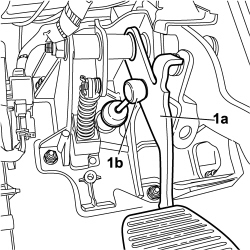
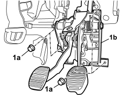

3330B42 PEDAL UNIT MOUNT - R RFOR RIGHT HAND DRIVE VERSIONS
- Path
- Procedures > 33 BRAKING SYSTEM > 3330 HYDRAULIC BRAKING SYSTEM > 3330B PEDAL UNIT > 3330B42 PEDAL UNIT MOUNT - R RFOR RIGHT HAND DRIVE VERSIONS
- Kind
- repair procedure (removal / refitting; the operation number is the code)
- Applies to
- engines: 1.2 8v; all production periods; only with equipment: Right hand drive
- Interactive page
- https://sloeber94.github.io/elrnDB-fPnd/en/#/169002212
Applies to: engines: 1.2 8v; all production periods; only with equipment: Right hand drive
 Removing
Removing
 Refitting
RefittingOp. 3330D74 IDLER SHAFT MOUNT ON BRAKE SERVO R R FOR RHD VERSIONS
1. Disconnect the master cylinder pushrod (1b) from the clutch pedal (1a).

Applies to: engines: 1.2 8v; all production periods; only with equipment: Right hand drive
1. Unscrew nuts (1a) and remove pedal mount (1b) form the engine compartment complete with pedals.

Applies to: engines: 1.2 8v; all production periods; only with equipment: Right hand drive
Refitting
RemovingPosition the pedal mount in the passenger compartment and tighten the nuts.
Value daNm | Fastening | Component | Ø | |
|---|---|---|---|---|
- | 2.2 | Nut | Bodyshell | M8 |
Connect the clutch drive cylinder pushrod to the clutch pedal.
Op. 3330D74 IDLER SHAFT MOUNT ON BRAKE SERVO R R FOR RHD VERSIONS